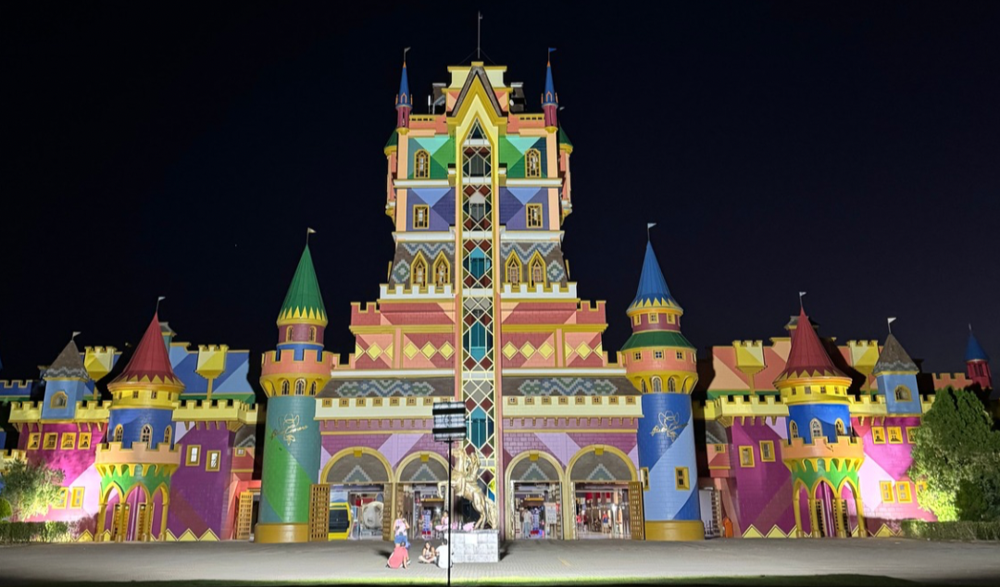
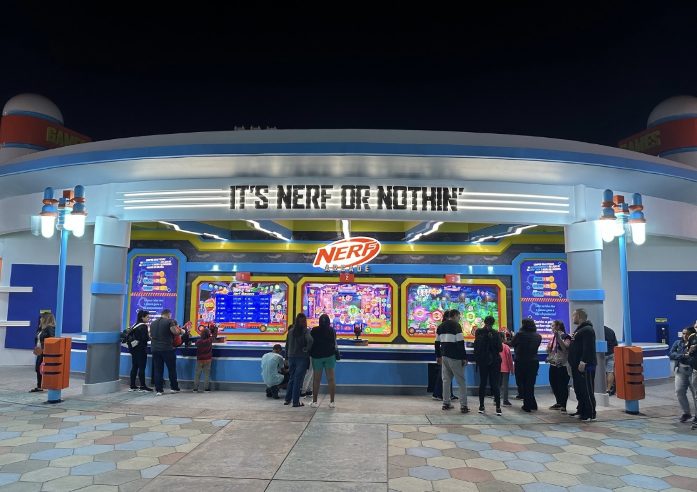
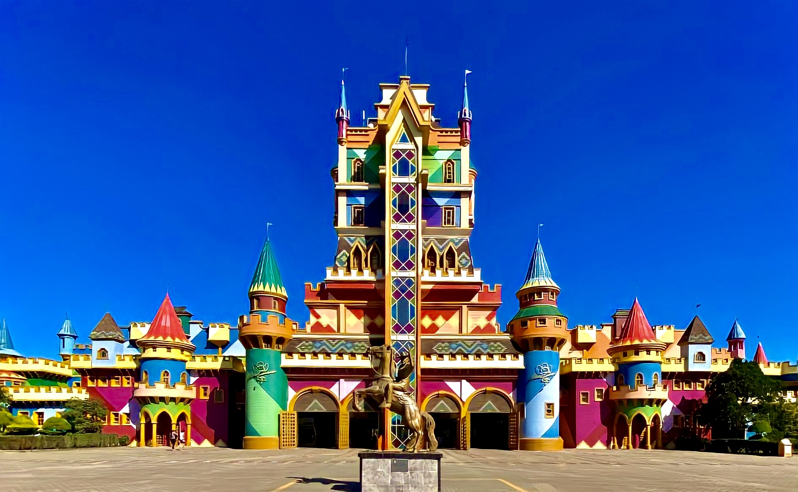

O maior parque temático da América Latina



Inaugurado no dia 28 de dezembro de 1991, o parque Beto Carrero World contava com duas tendas de circo e alguns brinquedos infantis da época, muito diferente de hoje em dia, onde o parque conta com mais de 100 atrações.
João Batista Sergio Murad (Beto Carrero), sempre sonhou com o mundo mágico como é hoje, sempre teve muita ambição sobre o que se tornaria o parque, mas infelizmente teve seu trabaho interrompido após a sua morte no dia 1 de fevereiro de 2008 no hospital Sírio-Libanês em São Paulo por um choque cardiogênico. Seu sonho continuou a ser realizado por seu filho, Alex Murad, atual presidente do parque, que o fez crescer grandemente após sua partida. Com certeza Beto estaria muito orgulhoso de ver o trabalho que seu filho vem desenvolvendo no mundo mágico!
Ao longo dos anos o parque vem crescendo de forma surpreendente, desde 2008 muita coisa mudou lá dentro, brinquedos e cenários antigos, deram lugar a brinquedos e parcerias novas, como por exemplo a parceria do parque com a DreamWorks que traz toda a turma do Shrek, Kung-fu Panda, Madagascar e Trolls, com a Paramount Distribuition, o parque traz do fundo do oceano a turma do Bob Esponja, a Mattel que traz o emocionante espetáculo do HotWheels e sua nova área temática Nerf Mania, com dois brinquedos sendo o Spin Blast e o Super Soaker Splash, lojas e restaurantes.
Vamos as atrações.
Beto Carrero conta com mais de 100 atrações, dando oportunidades para todas as idades se divertirem sem limites, o parque conta com áreas separadas e tematizadas, como por exemplo: a Cowboyland antigamente conhecida como Velho Oeste, conta com duas atrações, sendo elas o Rebuliço e o Betinho 2D (cinema), assim também como o Memorial do parque, onde contém vários ítens do proprio Beto como se fosse um museu, e, também tem a tenda onde é apresentado um incrivel musical chamado O Sonho do Cowboy.
Ou a Triplikland, área infantil do parque, que atualmente conta com a Roda Gigante, Baby Elefante, Xícaras Malucas e a Autopista (Carrinho Bate Bate).